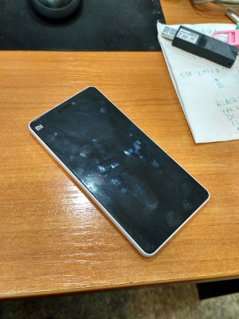
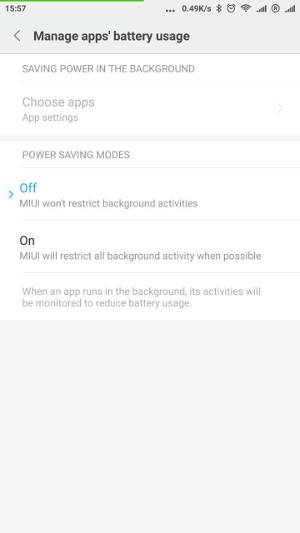
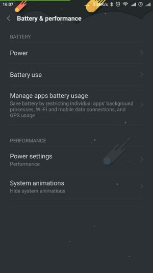

Ок, не буду утверждать так обобщенно про все телефоны сяоми. Я могу говорить про два, Mi4i, и Readme Note 3. Проблемы о которых я буду говорить это проблемы оболочки, не железа, поэтому возможно что это касается конкретной или конкретных версий. На Mi4i у меня стоит MIUI 8.1.5.0 Stable. Хотя это не единственная прошивка которой я пользовался, изначально на нем была 7, да и 8 кажется было пару апдейтов.

Это главная беда которая делает для меня телефон неюзабельным. Суть в том что приложения работающие в фоне, убиваются. Выглядит это так - запускаю например Endomondo, еду кататься на велике. Покатавшись, беру телефон, и оппа - endomondo упало и тренировка где то на каком то моменте потерялась. Это не случается обязательно каждый раз, видимо это зависит от других фоновых процессов. Если скажем при запущенном фоновом Endomondo, пришел звонок и я ответил на него, то Endomondo падает как раз во время звонка. Пару раз проверял такое. Другие примеры приводить думаю нет смысла, логика понятна. Бывало например что мне жена, зная поведение сяоми, посылает смс типа - открой Telegram ) Это значит она пишет, я не реагирую, возможно мой телеграм упал и надо его открыть чтобы увидеть новые сообщения.
Само собой я не сразу побежал строчить этот текст, я думал что это проблема решаемая. Гугл сказал что это известный вопрос и решается тем что надо подправить несколько настроек. А именно:

Казалось бы, все черным по русскому, не ограничивать фоновую активность.

Power Settings > Performance. Эта настройка сбрасывается на Balanced когда я перегружаю телефон )
Вот несколько ссылок по теме:
Некоторых настроек о которых тут говорится в моей версии MIUI вообще нет.
Я не исключаю того что эта проблема решается как то и я пропустил какую то настройку или совет. Но как то надоело c этим возиться.
Не очень серьезная но действует на нервы. Телефон Mi4i поддерживает две симки, одну я поставил для звонков, вторую для интернета. Ну и соответсвенно в настройках телефона поставил Vodafon, который для инета, как карту для данных.
Периодически я обнаруживаю что Киевстар стоит как симка для инета. И соответсвенно я пользовался инетом от киевстара неизвестно как долго, а киевстаровский инет у меня дороже. Как и когда происходит смена настройки я не смог проследить.
Only 37% of Xiaomi owners said they would buy another Xiaomi phone, while 74% of Apple users said they would get another iPhone. “Xiaomi isn’t sticky,” Clark says. “It’s not what an ecosystem should be.”
Can Xiaomi Live Up to Its $45 Billion Hype?
После пары недель пользования Nexus 5x я заметил что на родном андроиде я вижу больше уведомлений чем я видел на сяоми. Не знаю как это понимать и как точнее сформулировать. Скажем приложение gmail выкидывает уведомления и на сяоми и на нексусе. Но скажем на сяоми я не видел уведомлений от приложения Новой Пошты, не видел уведомлений от Pomodoro. Вообще на родном андроиде их кажется на много больше. Под уведомлениями я имею в виду уведомления в верхнюю панельку, не попапы, не screen lock.
Ну вообщем я пока без Xiaomi.